Vous venez d'arriver au dortoir de Gekkoukan High à Tatsumi Port Island.
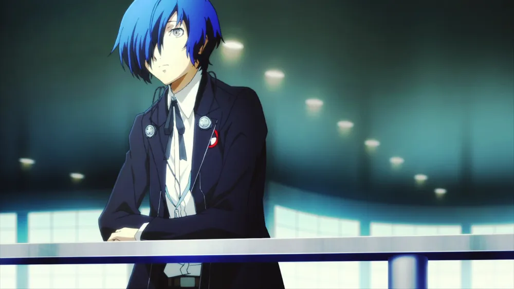
La nuit, une 25e heure apparait et est perceptible par uniquement certains individus.
Durant cette Heure Sombre, des monstres appelés Shadows apparaissent et attaquent les humains.

Vous vous éveillez à votre vous intérieur, votre Persona.
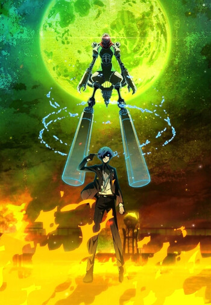
Et rejoignez S.E.E.S pour grimper le mystérieux Tartare, donjon à 250 étages, qui remplace le lycée durant cette Heure Sombre.
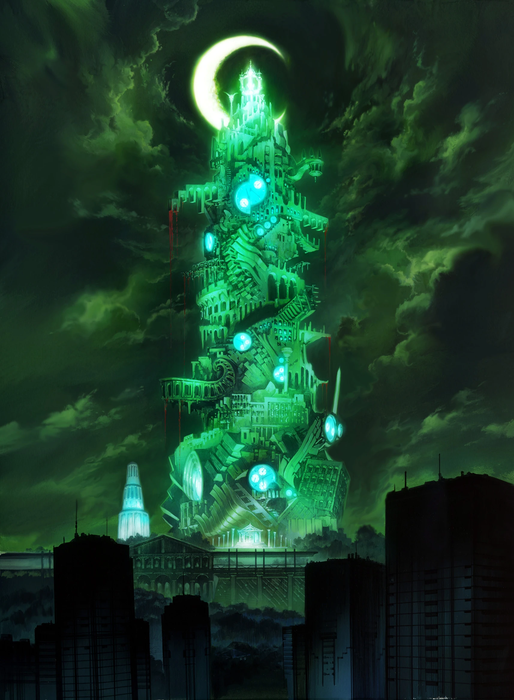
Dont les étages changent chaque soir. Parviendrez vous à empêcher l'Apocalypse ?
Tout en gardant une vie sociale équilibrée le jour, faisant connaissance avec d'autres étudiants et habitants.

Le jeu est un RPG au tour par tour utilisant le système de ONE MORE
Dans ce système trouver la faiblesse d'un ennemi octroie une action supplémentaire
Attention ! Les ennemis jouent au même jeu !
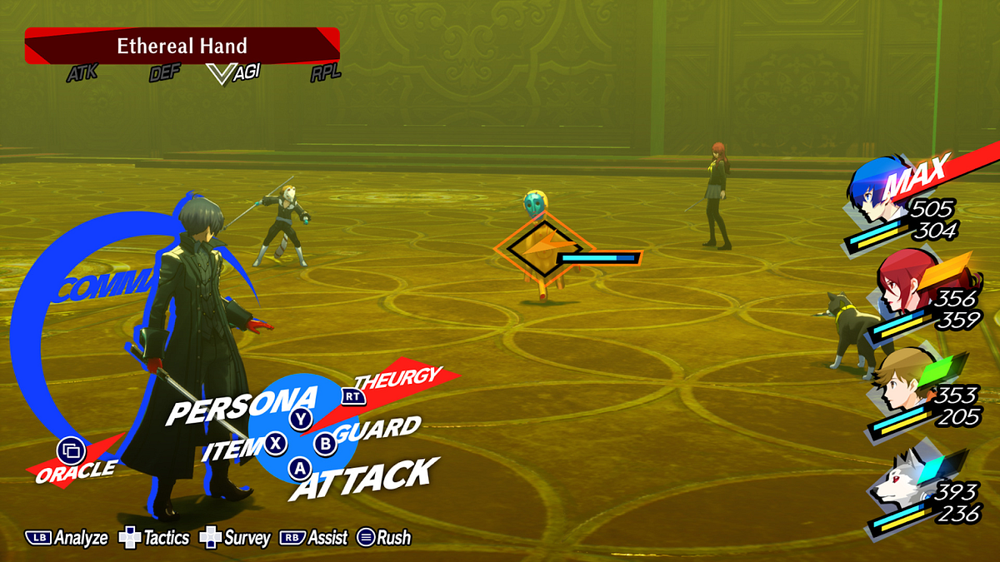
Au cours de l'aventure, le Protagoniste pourra débloquer et fusionner de nouveaux Persona
et changer ses attaques à l'aide de la Velvet Room.

Le Calendrier est un élement important du jeu, et vous devrez gérer votre temps
entre les activités sociales et les combats. Afin de vous préparer à la prochaine opération majeure du jeu

La musique du jeu est composée par Shoji Meguro et est légendaire et accompagné par le rappeur LOTUS JUICE
Et de la chanteuse Yumi Kawamura
Elle mélange des genres variés tels que le rock, le jazz, l'électronique et la pop, créant une atmosphère unique qui accompagne parfaitement l'expérience de jeu.
Voici trois morceaux emblématiques :
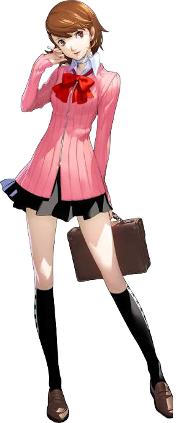
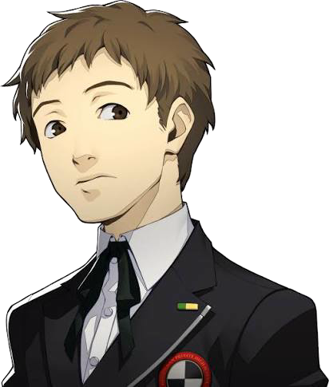
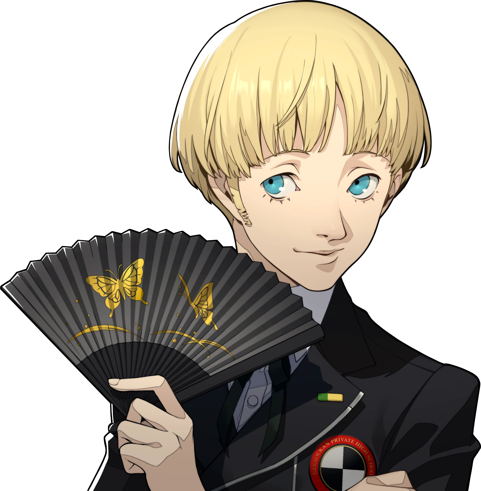
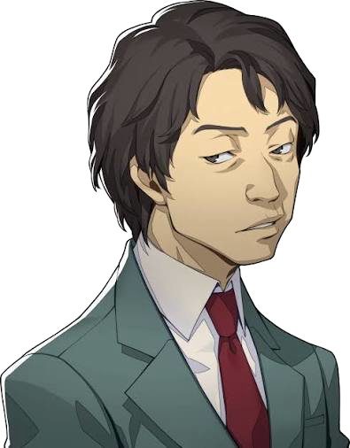
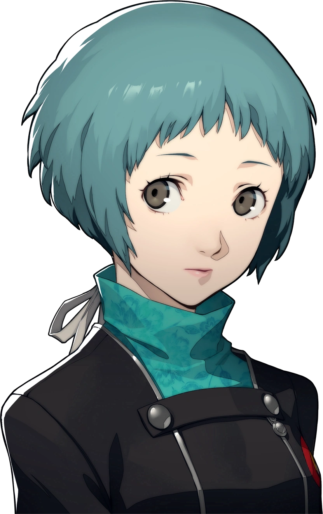
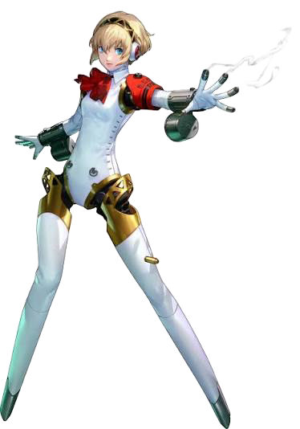
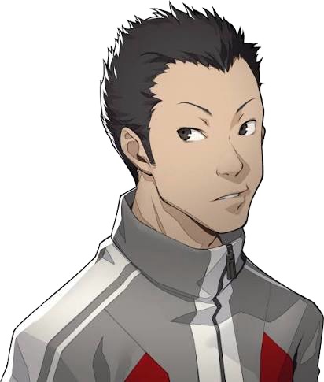
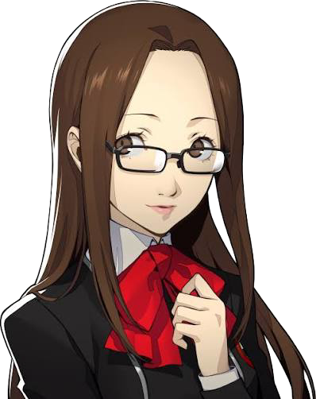

Pour progresser efficacement dans le jeu, il est essentiel de bien gérer votre temps et vos ressources.
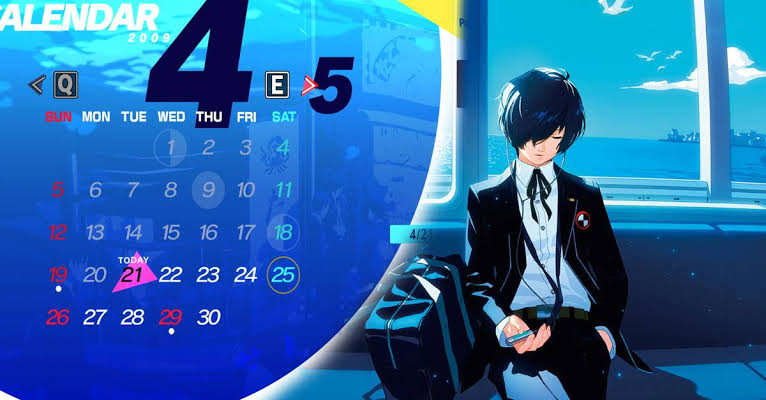
Assurez-vous renforcer vos stats sociales pour renforcer vos liens avec les personnages et débloquer de nouveaux bonus de fusion.
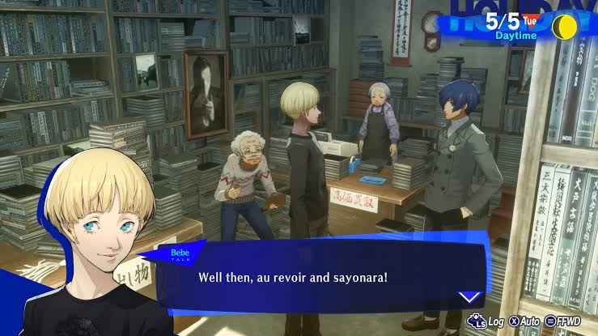
Profitez de l'histoire, elle est exceptionnelle et profonde !
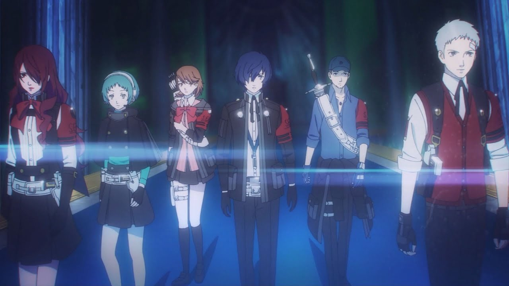